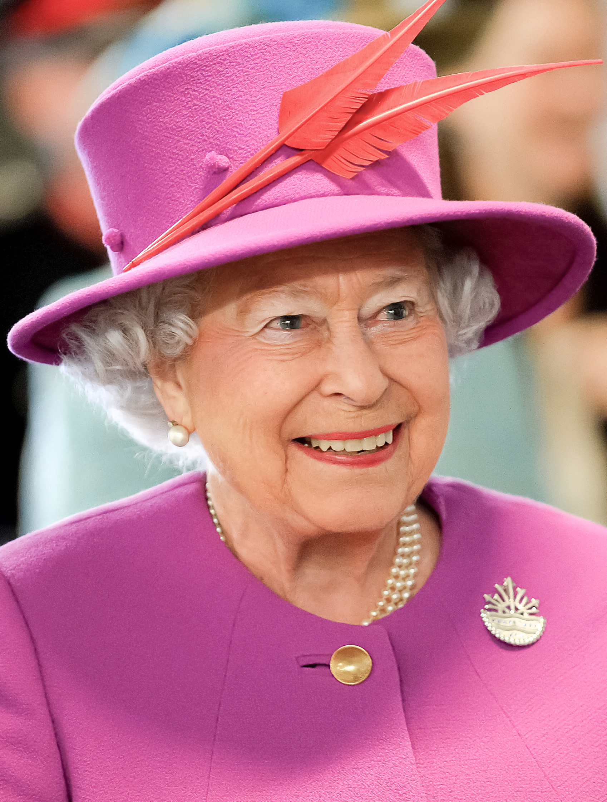
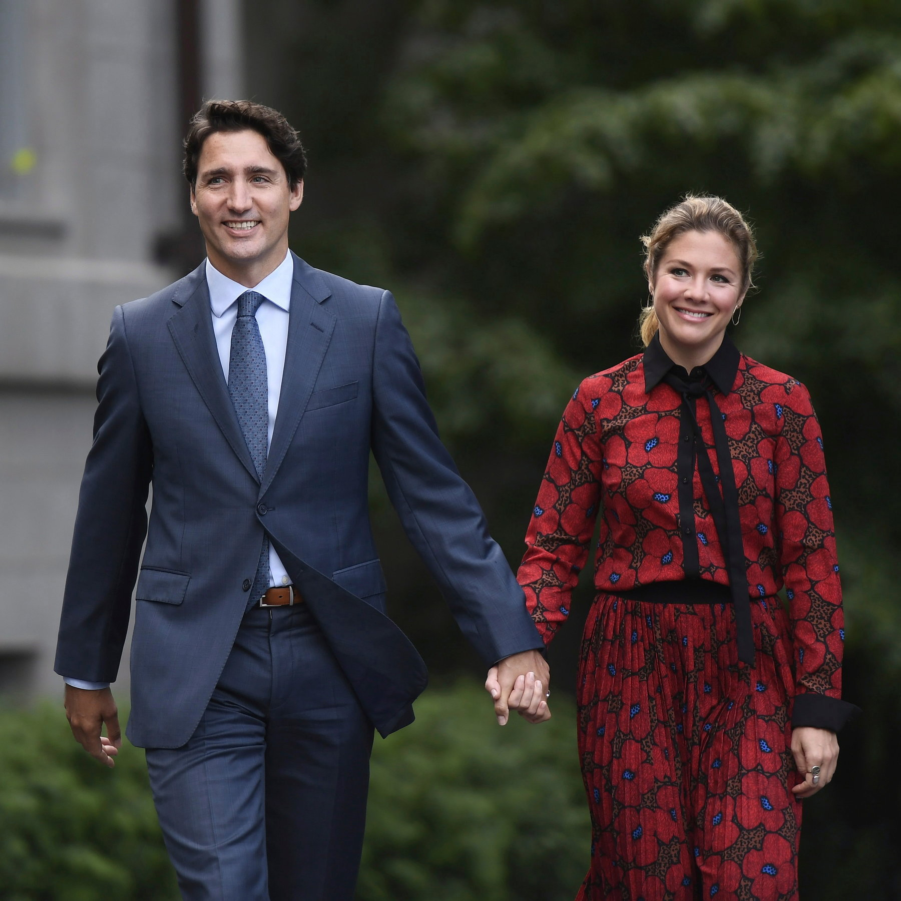
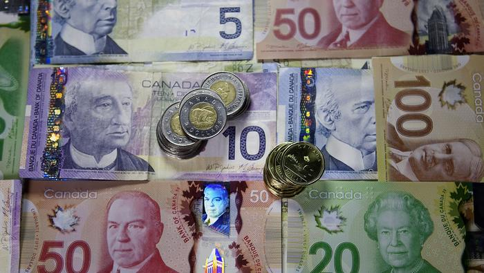

Kanada je konstituční monarchií, jejíž hlavou je Alžběta II., královna Velké Británie. Královniným zástupcem v Kanadě je generální guvernér. Kanada je též parlamentní zastupitelská demokracie s federálním uspořádáním a silnými demokratickými tradicemi. Kanadská ústava vytváří právní rámec existence země, skládá se z psaného obsahu a nepsaných tradic a konvencí. Její základ je obsažen v Zákoně o britské Severní Americe z roku 1867 („British North America Act 1867“, resp. „Constitution Act 1867“). Říká, že Kanada má ústavu podobnou principům Spojeného království a rozděluje moc mezi federální a provinční vlády. Zahrnuje tzv. Kanadskou chartu práv a svobod („Canadian Charter of Rights and Freedoms“) zaručující základní práva a svobody, jež v obecném měřítku nemohou být potlačeny žádnými legislativními nebo procedurálními kroky na žádné z úrovní vlády. Federálnímu parlamentu a provinčním správám nicméně umožňuje na pět let některé její další části potlačit. Funkce premiéra náleží vůdci strany, jež získá důvěru většiny dolní komory kanadského parlamentu. Generální guvernér zastupující královnu formálně jmenuje vládu i premiéra. Podle konvencí však volbu premiéra respektuje. Kanadská vláda tradičně sestává ze členů strany prvního ministra, jež mají křeslo v parlamentu, většinou v dolní sněmovně. Její členové jsou vázáni přísahou ke Královnině tajné radě pro Kanadu a stávají se ministry britské koruny. Premiér má širokou politickou moc především při jmenování dalších vysokých úředníků. Současnou generální guvernérkou je od roku 2017 Její Excelence Julie Payetteová, současným premiérem je od roku 2015 vůdce Kanadské Liberální strany Justin Trudeau. Kanadský parlament je složen ze dvou komor, z volené dolní komory parlamentu, sněmovny lidu, a jmenovaného senátu. Každý ze členů sněmovny lidu je volen většinovým volebním systémem. Všeobecné volby vypisuje generální guvernér na žádost předsedy vlády. Nové volby musí být vypsány do pěti let od posledních voleb. Členové senátu, jejichž křesla jsou přidělována na regionálním základě, jsou vybírání premiérem a formálně jmenováni generálním guvernérem. Svou funkci pak zastávají až do věku 75 let. Čtyřmi hlavními kanadskými politickými stranami jsou Conservative Party of Canada (Konzervativní strana Kanady), Liberal Party of Canada (Liberální strana Kanady), New Democratic Party (Nová demokratická strana) (NDP) a „Bloc Québécois“ (Quebecký blok). Současná (červen 2017) vláda je sestavena liberální stranou (vládne od roku 2015). Menší strany jako Green Party of Canada (Strana zelených) a další strany zastoupení v parlamentu nemají.
EkonomikaKanada je jedním z nejbohatších států světa s vysokými příjmy na jednoho obyvatele. Životní úroveň v zemi je tak velmi vysoká. Jedná se o člena OECD a skupiny G8. Její ekonomika je tržní a ač více regulovaná než v sousedních Spojených státech, méně regulovaná než ve většině evropských států. Tradičně má nižší hrubý domácí produkt na obyvatele než její jižní soused (bohatství je však rozděleno rovnoměrněji), také však vyšší než velké rozvinuté západoevropské ekonomiky. V minulém desetiletí její ekonomika celkově rychle rostla a země si zachovala nízkou nezaměstnanost. V roce 2006 byla nezaměstnanost 6,3 % což je nejlepší výsledek za posledních 30 let. Nejvyšších hodnot naopak dosahuje na Newfoundlandu a Labradoru a to okolo 14,5 %. V minulém století růst výroby, těžby a služeb přeměnil ekonomiku ze zemědělsky zaměřeného státu na především urbanizovaný průmyslový stát. Stejně jako v ostatních zemích rozvinutého světa v kanadské ekonomice dominuje sektor služeb, jež zaměstnává tři čtvrtiny Kanaďanů. Mezi rozvinutými zeměmi je však Kanada neobvyklá v míře důležitosti primárního sektoru v čele s těžbou dřeva a ropy. Jedná se o jeden z nemnoha rozvinutých států světa, jež energii vyváží. Má velmi velké zásoby zemního plynu při východním pobřeží a velké zásoby ropy a plynu v Albertě a částečně i v Britské Kolumbii a v Saskatchewanu. Její ropné zásoby jsou tak druhé největší na světě, hned za Saúdskou Arábií. V Québecu, Britské Kolumbii, Newfoundlandu, Labradoru, Ontariu a v Manitobě je k dispozici velmi levná energie z vodních elektráren. Kanada je jedním z nejdůležitějších světových dodavatelů zemědělských produktů. Bývalé kanadské prérie jsou dnes jedněmi z nedůležitějších oblastí pěstování pšenice a ostatních obilovin. Také je největším světovým vývozcem zinku a uranu a předním světovým vývozcem zlata, niklu, hliníku, olova. Mnoho sídel v severní části země existuje jen díky těžařství, ať už minerálních surovin nebo dřeva. Má také značně velký výrobní sektor, především na jihu v Ontariu kde je důležitý především automobilový průmysl a dále pak na jihu Québecu kde sídlí mnoho firem zabývajících se kosmonautikou a vesmírným průmyslem. Kanada je ve vysoké míře závislá na mezinárodním obchodu, zvláště se Spojenými státy. Bilaterální dohoda mezi Kanadou a USA z roku 1989 (FTA) a především Severoamerická dohoda o volném obchodu (NAFTA) z roku 1994 zahrnující i Mexiko spustila dramatický růst míry ekonomického propojení s USA. V roce 2001 země úspěšně překonala ekonomický pokles a udržuje si tak nejlepší celkový výkon ekonomiky mezi zeměmi G8. Od poloviny devadesátých let je státní rozpočet v trvalém přebytku, dochází tak k pokračujícímu snižování státního dluhu.
Elizabeta II.
Premiér Justin Trudeau
Kanadské dolary
